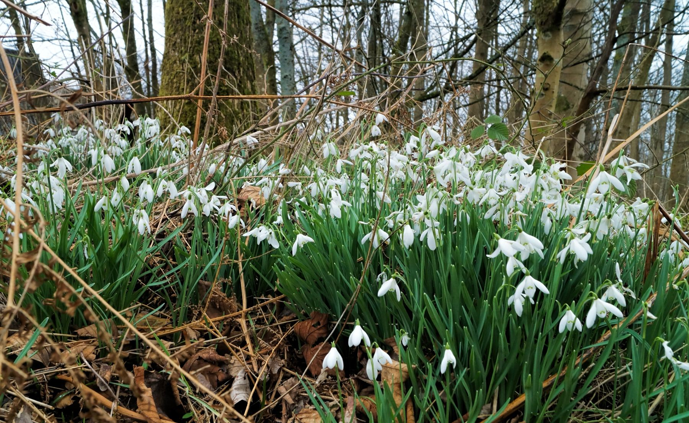
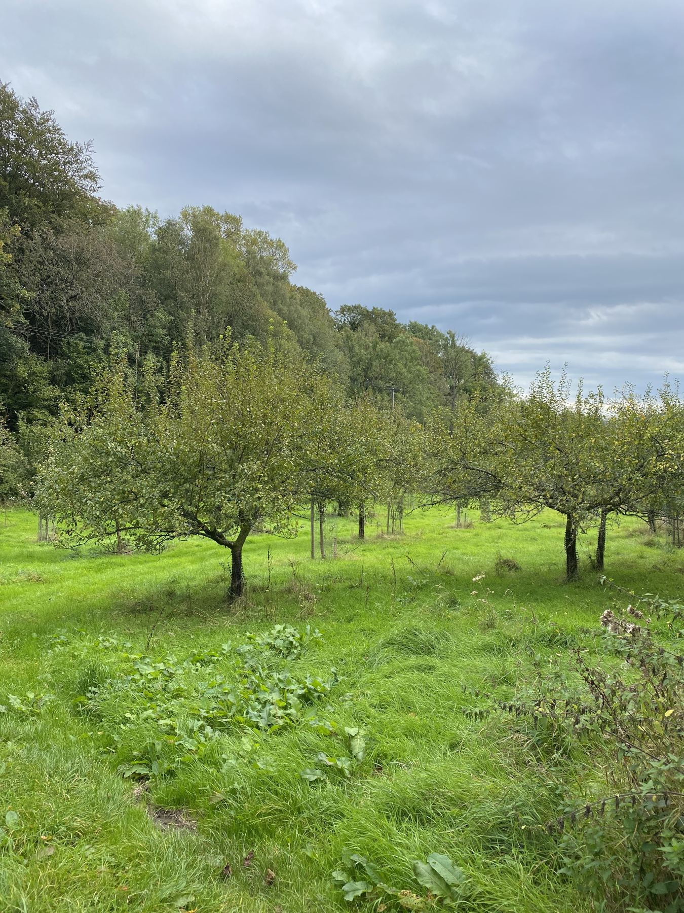

Witherslack Hall Estate
800 hectares on the edge of the Winster Valley, with the River Winster to the west and Whitbarrow Scar to the east. Home to Halecat House, our woods and our orchards.
Come and stay, warm your house, try the juice
There are three businesses on the estate, each with its own team. They all work out of Halecat, a few minutes' walk from each other.
Book Halecat House for a family holiday or a party, order a load of logs from the woodyard, or pick up a bottle of juice pressed from apples grown just down the lane.

Halecat House
Our late Georgian family house, to rent by the week or the weekend. Sleeps eleven, dogs welcome, and a fabulous place for a party or a wedding.
Stay at Halecat
Witherslack Woodlands
Sustainable firewood from our own woods, air dried for up to a year and delivered across South Cumbria. Going since 1990.
Order logs
Witherslack Orchards
Apple juice, apple and damson juice and damson gin from our 21 orchards, made in small batches up at Halecat.
See the productsFrom the woods to the house
The businesses run separately, but they share the land and a fair bit else besides. This is how one year goes round.
-
Coppicing
In winter we thin plots of woodland in turn. Light gets back to the woodland floor, and the primroses, violets and butterflies come back with it.
-
The woodyard
The logs dry in our sheds for up to a year. The brash and twigs, bundled into faggots, go into the 200kW biomass boiler.
-
The house
That boiler heats Halecat House, the studios and the offices. So the hot water in the cast iron baths comes from our own woods.
-
The orchards
In late summer we pick the apples and damsons, with help from volunteers and the odd house guest, and press them at Halecat.

The largest area of semi natural woodland in Cumbria
Witherslack Hall Estate sits on the edge of the Winster Valley in Southern Lakeland, bordered to the west by the River Winster and to the east by Whitbarrow Scar.
Much of the woodland is a Site of Special Scientific Interest, and needs careful, sensitive management to protect some of our most endangered species. We work with the Forestry Commission and Butterfly Conservation, and since 2016 with the Westmorland Red Squirrel Society to bring red squirrels back to Witherslack.
It's very popular with walkers and wildlife lovers. Whitbarrow Scar is our favourite walk.
Who else is here
Halecat is home to a lively bunch of makers, growers and craftspeople. Here are a few of them, and a few favourites in the village.
Abi & Tom's Garden Plants
Award winning garden designers, with a nursery on the site of the original Halecat nursery. They run courses too.
Charlie Whinney Studio
Art, architecture and design in steam bent wood. They make almost everything themselves.
The artists' studios
Painters, a potter and sculptors in the East Wing of the house, with the odd open studio day.
Witherslack Woodworks
Joiners, foresters, coppicers and makers who mill and work the timber that grows here.
Woodsmoke
Bushcraft and wilderness survival courses, for when you want to survive in the wild.
The village
The Derby Arms for food and real ale, the community shop next door, St Paul's church and the riding stables at Witherslack Hall.
Who to ring
Each business keeps its own diary, so it's quickest to go straight to them.
- Halecat House
- Stays, parties and weddings: ring Elaine on 015395 52387
- Woodlands
- Firewood: 015395 52353 or sales@witherslackwoodlands.co.uk
- Orchards
- Juice, gin and stockists: juice@witherslackorchards.co.uk
- Estate office
- Venue hire, workspaces and holiday lets: 015395 52387 (answerphone). Haymaking equipment: lydia@witherslackestate.co.uk
- Find us
- Halecat, Witherslack, Grange-over-Sands, Cumbria LA11 6RT